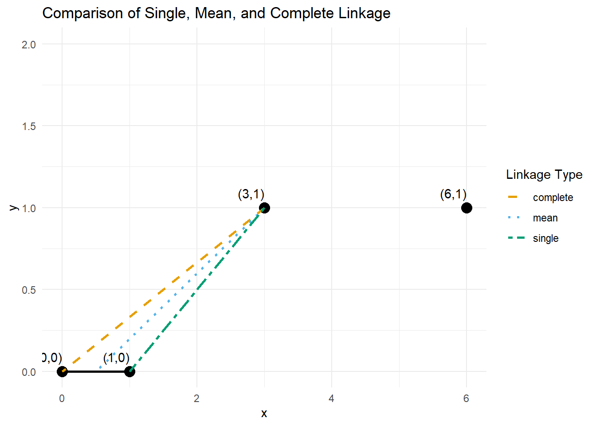
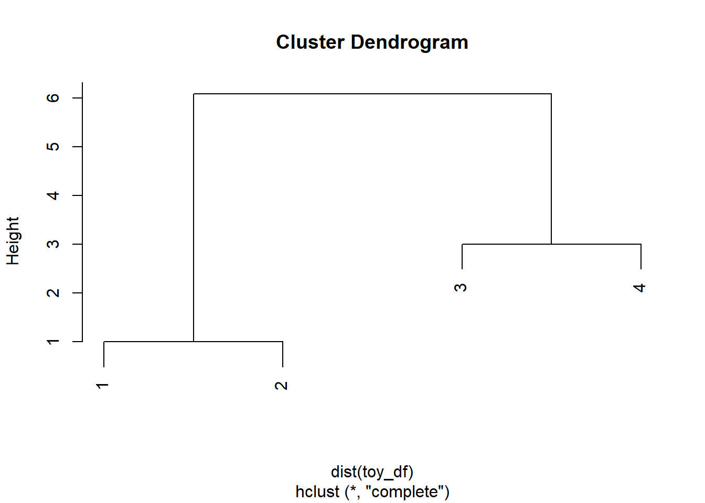
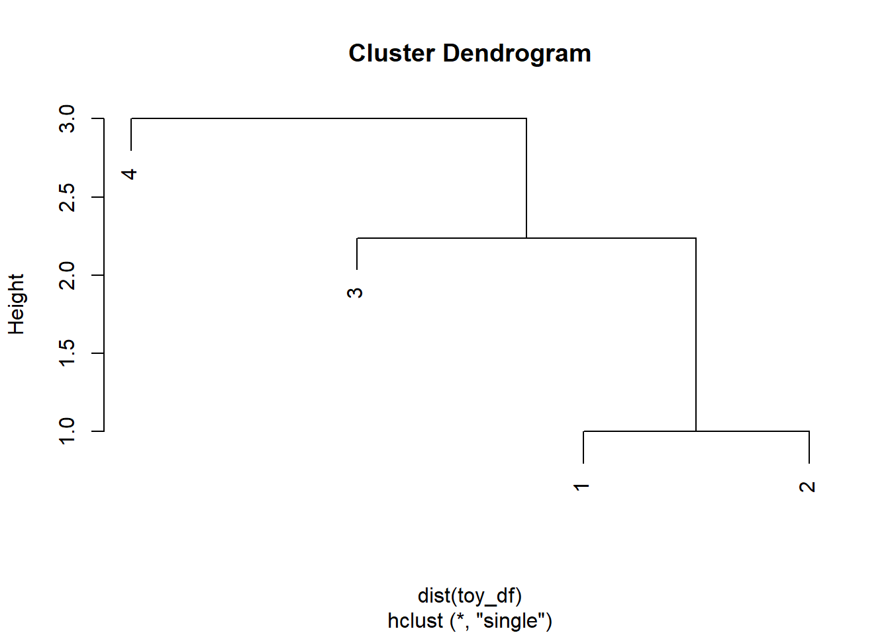
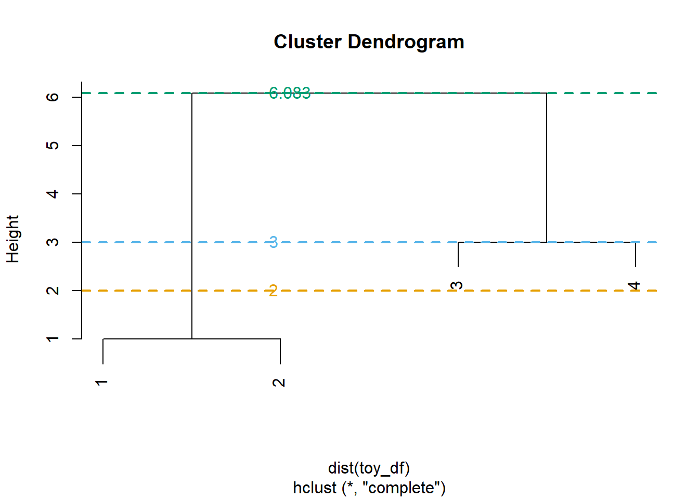
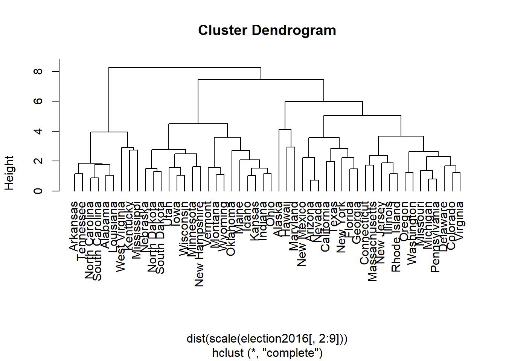
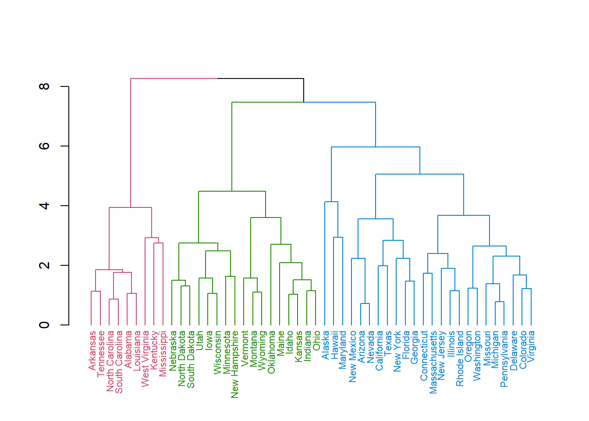
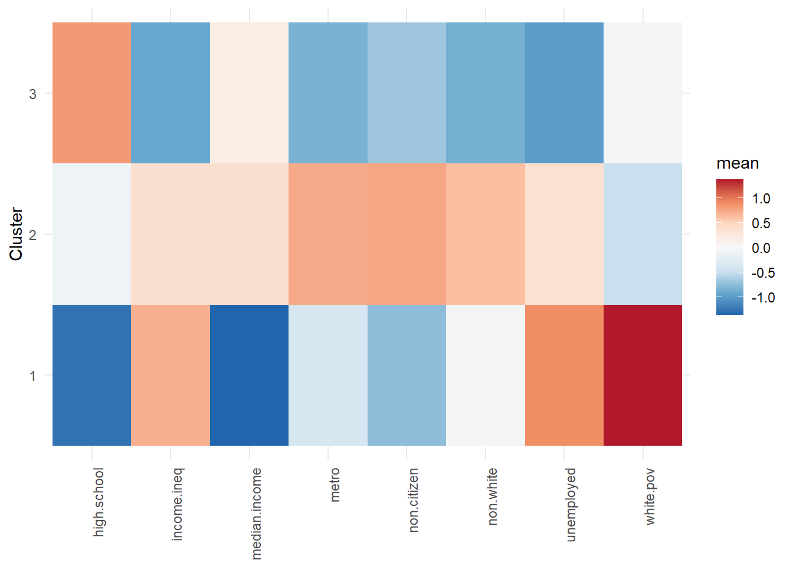
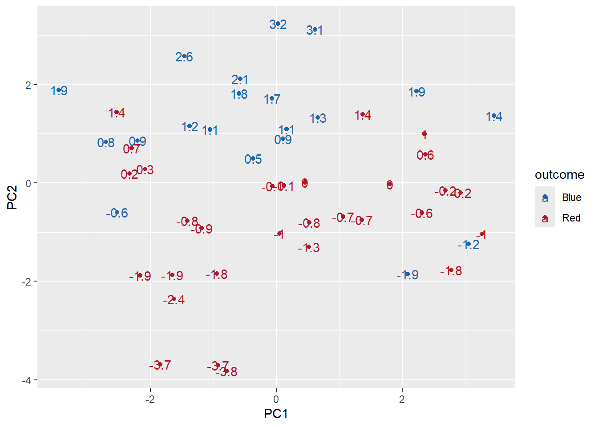

library(tidyverse)
df_url="https://raw.githubusercontent.com/jmayberr/math133-stat-learning-fall2026/refs/heads/main/Datasets/election2016.csv"
election2016=read.csv(df_url)
cb_palette <- c(
"#000000", # black
"#E69F00", # orange
"#56B4E9", # sky blue
"#009E73", # bluish green
"#F0E442", # yellow
"#0072B2", # blue
"#D55E00", # vermillion
"#CC79A7" # reddish purple
)Module 5.3: Hierarchical Clustering
Linked in-to clustering
Hierarchical clustering is the second primary class of clustering algorithms and one which does not require the user to pre-specify a number of clusters. Instead, hierarchical clustering seeks to organize all samples into an ancestral-like tree called a dendrogram1 that shows which points are most closely related to each other. The algorithm proceeds as follows.
- At each step, calculate a matrix of pairwise “distances” between all current clusters
- Merge the two clusters which are “closest”.
Initially, all points are considered their own clusters2 so at stage one, we compute all pairwise distances between points and merge the two closest ones. The choice of distance metric (called the dissimilarity measure) may vary from problem to problem, but is usually taken as the \(\ell_2\)/Euclidean distance.
Once we merge two points, we have to decide how to treat this cluster in future dissimilarity calculations. The choice we make is called the linkage criteria and there are three main options:
- Do we compute the mean distance from a point to the cluster? If so, we are using a mean-linkage criteria.
- Do we compute the minimum distance from a point to the cluster? If so, we are using single-linkage.
- Do we compute the maximum distance of the point to the cluster? If so, we are using complete-linkage.
To illustrate, suppose we have four points \(x_1=(0,0), x_2=(1,0), x_3=(3,1), x_4=(6,1)\) and we are using Euclidean distance as our dissimilarity metric. At stage one, we compute all pairwise distances between points and find that \(x_1,x_2\) are the closest points. We therefore merge them into a cluster \(\{x_1,x_2\}\). At the next stage, we have to compute the dissimilarity between each other point and this cluster. This requires us to decide on the linkage. Here are the dissimilarities between \(x_3\) and the \(\{x_1,x_2\}\) cluster under the three most common choices
- Mean-linkage: The mean of \(x_1,x_2\) is \((1/2, 0)\) which has distance \[\sqrt{(5/2)^2+1^2} \approx 2.69\] from \(x_3\).
- Single-linkage: The closest point from \(x_3\) in the cluster is \(x_2\) so the dissimilarity between \(x_3\) and the cluster is \(\sqrt{5}\approx 2.24\).
- Complete-linkage: The furthest point from \(x_3\) in the cluster is \(x_1\) so the dissimilarity is \(\sqrt{10} \approx 3.16\).
These are shown in the figure below3:
# Define points
points_df = data.frame(
x = c(0, 1, 3, 6),
y = c(0, 0, 1, 1),
label = c("(0,0)", "(1,0)", "(3,1)", "(6,1)")
)
# Compute the mean linkage point
mean_x <- mean(c(0, 1))
mean_y <- mean(c(0, 0))
# Define the distances
linkages_df <- data.frame(
x1 = c(3, 3, 3),
y1 = c(1, 1, 1),
x2 = c(0, mean_x, 1),
y2 = c(0, mean_y, 0),
type = c("complete", "mean", "single")
)
#Plot shit
points_df |>
ggplot( aes(x, y)) +
geom_point(size = 4, color = "black") +
geom_text(aes(label = label), vjust = -1, hjust = 1) +
geom_segment(aes(x = 0, y = 0, xend = 1, yend = 0),
color = "black", linewidth = 1) +
geom_segment(data = linkages_df,
aes(x = x1, y = y1, xend = x2, yend = y2, linetype = type, color = type),
linewidth = 1) +
scale_linetype_manual(values = c("dashed", "dotted", "twodash")) +
scale_color_manual(values = cb_palette[2:4]) +
labs(title = "Comparison of Single, Mean, and Complete Linkage",
linetype = "Linkage Type",
color = "Linkage Type") +
theme_minimal()+
ylim(c(0,2))
You can see why the choice of dissimilarity matters! \(x_4\) is distance 3 from \(x_3\) (and further from \(x_1,x_2\) no matter which way you look at it). So under mean or single linkage, our next step would be to merge \(x_3\) with \(\{x_1,x_2\}\) but under complete, we would first merge \(x_3\) with \(x_4\).
Computing a Hierarchical Cluster Object in R
Here is code to perform hierarchical clustering on our toy example above using all three types of linkage:
toy_df=data.frame(x=c(0,1,3,6),y=c(0,0,1,1))
hc_complete=hclust(dist(toy_df),method="complete")
hc_single=hclust(dist(toy_df),method="single")
hc_avg=hclust(dist(toy_df),method="average")A dendrogram is a tree-diagram that can be used to visualize the steps performed in hierarchical clustering and view similarities between points. You can obtain a dendrogram by plotting the output of a call to hclust
plot(hc_complete)
This demonstrates the fact that under complete-linkage, 1 and 2 are merged first followed by 3 and 4. Note that the “Height” variable displays the distance at which clusters were merged. For example, 1 and 2 were merged first at a height of 1 because they are one unit apart whereas 3 and 4 were merged next at a Height of 3. Finally, the maximum distance between any pairs of points in the \(\{x_1,x_2\}\) vs \(\{x_3,x_4\}\) cluster is \(\sqrt{37}\approx 6.08\) which is the height of the next merger.
In contrast, the single linkage exhibits a different merger pattern. We still merge 1 and 2 first, but 3 joins their family before meeting up with 4:
plot(hc_single)
In this example, using average distance gives the same picture as single so we won’t waste space by showing it (it’s only “average” anyways).
From dendrograms to clusters
To actually form clusters of objects out of a dendrogram, one must choose a cut height and then group all objects together whose branches merge below the cutpoint. For example, in the complete-linkage case, choosing a cut height of 2 would create three clusters, one containing \(\{x_1,x_2\}\) with \(x_3,x_4\) in their own clusters:
cutree(hc_complete,h=2)[1] 1 1 2 3Using a height of 3, however, would create two clusters with \(\{x_3,x_4\}\) now together.
cutree(hc_complete,h=3)[1] 1 1 2 2Choosing a height above \(\sqrt{37}\) will just create one supercluster
cutree(hc_complete,h=sqrt(37))[1] 1 1 1 1You can visualize all this as follows by plotting the cut heights alongside the tree
plot(hc_complete)
heights = c(2, 3, sqrt(37))
abline(h = heights, col = cb_palette[2:4], lty = 2, lwd = 2)
text(x = par("usr")[1] + 1, y = heights,
labels = round(heights, 3), col = cb_palette[2:4], pos = 4)
We’ll leave it to you to play around with the single/average case!
Election Data….Again…
We’ve had so much fun with this dataset. I am dying to see what a state dendrogram looks like! Note that we definitely should scale each column before we compute distances since as previously noted, some of our variables are on vastly different scales. It is also helpful to set the row names as the states for plotting purposes
rownames(election2016) = election2016$state
election_hc=hclust(dist(scale(election2016[,2:9])),method="complete")Let’s see what this crazy-ass thing will look like:
plot(election_hc,hang=-1)
We can get different clustering depending on the cut height. Using h=6 gives us three clusters of unequal size
cluster_h6=cutree(election_hc,h=6)
table(cluster_h6)cluster_h6
1 2 3
9 24 17 Using a lower height of 5 gives five groups
cluster_h5=cutree(election_hc,h=5)
table(cluster_h5)cluster_h5
1 2 3 4 5
9 3 8 13 17 You can also split by number of clusters, for example,
cluster3=cutree(election_hc,k=3)
table(cluster3)cluster3
1 2 3
9 24 17 Deciding upon a good cut point sort of just shifts the problem of setting the number of clusters ahead of time in K-means to a later stage in the problem (although the advantage is that you only have to do the grouping work once and can more easily experiment around with different cuts at this point).
To see how the states are clustered based on a cut, the dendextend package is a useful tool for adding different colors to a dendrogram for each group. Here is an example usage for the three-cluster case:
library(dendextend)
election_hc |>
as.dendrogram() |>
set("labels_cex", 0.7) |> # Optional to make labels smaller
color_branches(k=3) |>
color_labels(k=3) |>
plot()
If you want to look at the mean characteristics of each variable by cluster and create bar, profile, or heat map plots like we did in the last notes, two additional steps are required:
- We need to scale the variables.
- We need to compute the means of the variables by cluster
The across() function is helpful when you want to perform an operation across multiple columns like scaling or taking the mean so we’ll use that in both steps. The group_by() will be used to organize observations into clusters before computing means.
We’ll demonstrate by making a heat map of means for the three cluster case.
library(RColorBrewer)
# Calculate scaled "centers" of clusters
means = election2016 |>
mutate(clusters=cutree(election_hc,k=3)) |>
mutate(across(-c(state, trump.vote, outcome, clusters), scale)) |>
group_by(clusters) |>
summarize(across(-c(state, trump.vote, outcome), mean))|>
pivot_longer(-clusters, names_to = "statistic", values_to = "mean")
# Create plot
means |>
ggplot(aes(x = statistic, y = factor(clusters), fill = mean)) +
geom_tile() +
scale_fill_distiller(
palette = "RdBu",
direction = -1
) +
theme_minimal() +
theme(axis.text.x = element_text(angle = 90, hjust = 1)) +
labs(y = "Cluster", x = NULL)
From unsupervised back to supervised: predicting outcomes based on clusters
Of course, the overall goal of our election2016 data was to predict presidential voting based on the eight demographic features of states. We’ll conclude these notes by comparing three different methods for predicting election outcomes:
- PCA
- K-means Clustering (with \(K=3\))
- Hierarchical Clustering (with three cuts)
In each case, we’ll use our unsupervised methods to cut the data into clusters and compare them with the actual election outcomes. It would be better to do training/testing sets or some kind of cross-validation, but to keep these notes from getting out of control, we’ll just look at overall accuracy.
First, here are the relevant commands from the last three notes to do PCA and clustering:
election_pc=prcomp(election2016[,2:9],scale=TRUE)
election_kmeans=kmeans(scale(election2016[,2:9]),centers = 3,nstart=100)
election_hc=hclust(dist(scale(election2016[,2:9])),method="complete")The kmeans result is ready to go. We can create a “confusion” matrix for the clusters compared to election outcomes with:
table(election2016$outcome,election_kmeans$cluster)
1 2 3
Blue 4 1 15
Red 14 10 6Looking at the results, it appears that we should associate cluster 1 with blue and clusters 2-3 with red. Our accuracy would then be
(sum(election_kmeans$cluster==1&election2016$outcome=="Blue")+sum(election_kmeans$cluster %in% c(2,3) &election2016$outcome=="Red"))/50[1] 0.4Now, for the hierarchical clustering, we first need to make a three group cut:
outcome_hc=cutree(election_hc,k=3)
table(election2016$outcome,outcome_hc) outcome_hc
1 2 3
Blue 0 16 4
Red 9 8 13It look like predicting blue for cluster 2 and predicting red for clusters 1, 3 is best here and gives an accuracy of 38/50 or 0.76.
Finally, we have PCA, the most complicated. Here is the old plot of the first two components, colored by outcome and labeled with PC2 value.
electionPC=cbind(election2016,election_pc$x[,1:2])
electionPC |>
ggplot(aes(x=PC1,y=PC2,color=outcome))+
geom_point()+
geom_text(aes(label=round(PC2,1)))+
scale_color_manual(values=c("#2166AC", "#B2182B"))
It looks like splitting by PC2 will do well. Naively, I might try “guess blue if PC2 >=0.8” based on what we see4. Let’s check the confusion matrix for this prediction rule:
table(election2016$outcome,electionPC$PC2>=0.8)
FALSE TRUE
Blue 4 16
Red 27 3Yeah, not bad. The accuracy is 43/50 or 86! But if we use a legit classification scheme like logistic regression (full model):
outcome_glm=glm(factor(outcome)~.,
data=election2016[,c(2:9,11)],
family="binomial")
pred_outcome=ifelse(predict(outcome_glm,type="response")>=0.5,"Red","Blue")
table(election2016$outcome,pred_outcome) pred_outcome
Blue Red
Blue 16 4
Red 1 29we get an even better accuracy of 90%.
The moral here is that unsupervised methods are better for revealing patterns than they are at making predictions. The latter goal forces them to give us a certain splitting, one which is good for predicting the 2016 election, without telling it that’s our goal to begin with. You are forcing the model to shoot blindly at a target. Supervised models get to see what they are aiming for and hence have a better chance of hitting the bullseye.
Next up…
In Module 6, we’ll return to supervised models. We’ll start by exploring classification and regression tree (CART) models, a powerful tool for visualizing predictive models, but one that can suffer from high variance. We’ll “fix” this issue (at the expense of losing interpretability) by developing ensemble methods like bagging, random forests and boosting. All are based on repeated sampling which we’ll see helps reduce variance and improve predictive accuracy.
Practice
Using the iris dataset from Module 5.2, complete the following steps
- Fit a hierarchical clustering model to the four descriptive measurements. Visualize the results with a dendrogram.
- Cut the dendrogram to create three clusters and compare the cluster assignments with the actual species. How well does it do at prediction?
Footnotes
literally Greek for tree-diagram.↩︎
This bottom-up method of hierarchical clustering is called AGglomerative NESting or “AGNES” for short. There is an alternative method called DIvisive ANAlysis or “DIANA” clustering takes a top-down approach, starting with one giant clustering and splitting as it goes. Like PAM and CLARA, we will not talk about DIANA in these notes. Sorry girlies.↩︎
Don’t worry about the code too much; I outsourced this one to AI!↩︎
For a better way of splitting points in planes, look up Support Vector Machines, another cool topic that isn’t covered in these notes↩︎